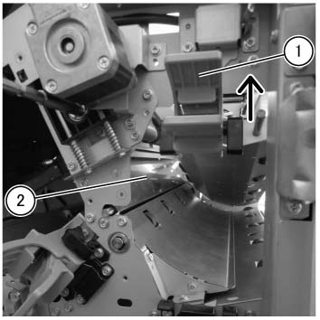

REP 47.13.1 手送 挡板 组件 
参考 PL:PL 47.13
Removal

执行IOT关机步骤. 确认电源已关闭并拔掉电源插头.
打开前盖板. (PL 47.1)
拆卸后盖板. (PL 47.2)
拆卸顶盖组件. (PL 47.1)
执行 步骤 2 的 Removal 步骤 用于 the 手送 挡板 电磁阀 组件 (REP 47.13.3).
拆卸弹簧. (PL 47.13)
拆卸 顶部 Support 支架. (PL 47.6)
拆卸 电磁阀 支架. (PL 47.13)
拆卸轴承 在后面. (PL 47.13)
执行 the Removal 步骤 用于 the TCBM SW/LED PWB 组件 (REP 47.5.1) 从 Steps 3 to 7.
拆卸轴承 在前面. (PL 47.13)
执行 步骤 3 的 Removal 步骤 用于 the 上方 开关 出纸 滑槽 (REP 47.14.1).
拆卸 手送 挡板 组件. (图 1)
抬起 up the J 滑槽 组件 (PL 47.24) in the 方向 的 arrow.
拆卸 手送 挡板 组件.

(图 1) tcw447034